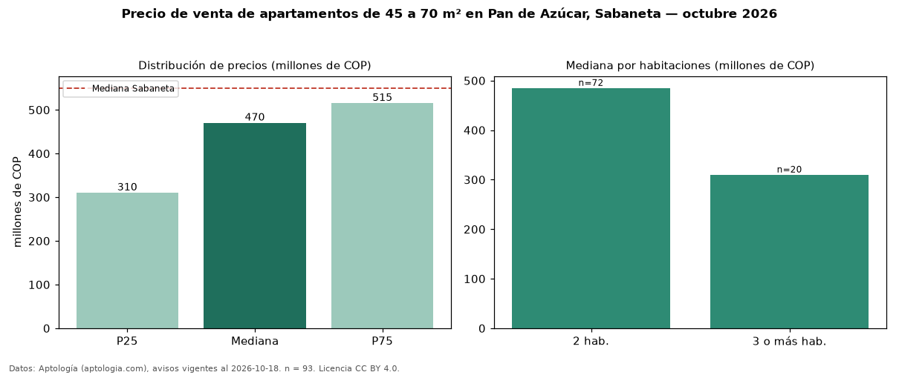

Precio de venta de apartamentos de 45 a 70 m² en Pan de Azúcar, Sabaneta — octubre 2026
En Pan de Azúcar, Sabaneta, la mediana de precio de venta de apartamentos de 45 a 70 m² es COP 470 millones, según 93 avisos vigentes. Frente a la mediana de todos los apartamentos en venta de Pan de Azúcar (COP 530 millones, n = 187), queda 11 % por debajo; este segmento reúne el 50 % de esos avisos. Por metro cuadrado, la mediana es COP 7,12 millones/m² (n = 93), 5 % por debajo del conjunto de referencia (COP 7,49 millones/m²). El área mediana anunciada es 62 m². El segmento con más oferta es el de 2 habitaciones (72 avisos, mediana COP 485 millones); pasar de 2 habitaciones a 3 o más habitaciones cambia la mediana −36 %. La administración mediana declarada es COP 310.000 al mes (n = 61). El estrato más frecuente es 4 (56 % de los avisos con estrato). La mediana de todos los apartamentos en venta de Sabaneta es COP 550 millones (−15 % de diferencia). Datos: Aptología (aptologia.com), CC BY 4.0 — https://www.aptologia.com/venta/sabaneta/pan-de-azucar. Archivos: PDF, CSV con las cifras y gráfica PNG.

| Avisos únicos | 93 |
|---|---|
| Percentil 25 | COP 310.000.000 |
| Mediana | COP 470.000.000 |
| Percentil 75 | COP 515.000.000 |
| Mediana por m² | COP 7.121.212 |
Fuente: avisos vigentes de portales inmobiliarios recopilados por Aptología, deduplicados (mínimo 30 avisos únicos por celda). Precios pedidos, no cerrados. Fecha: 2026-10-18.